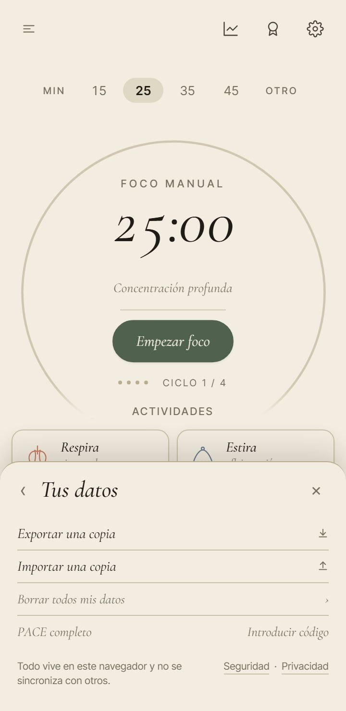
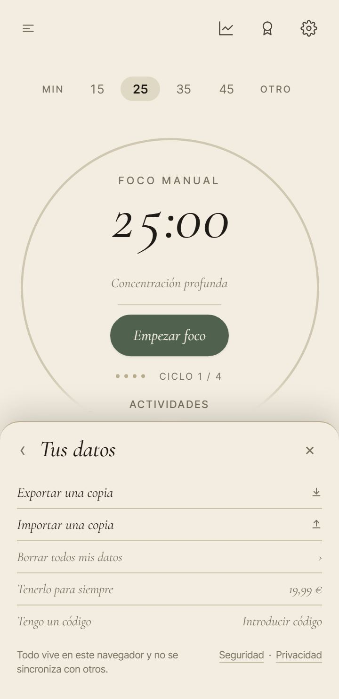
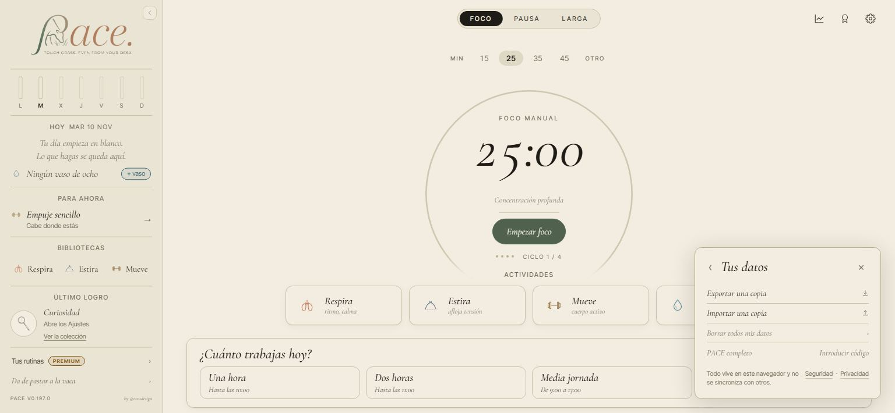
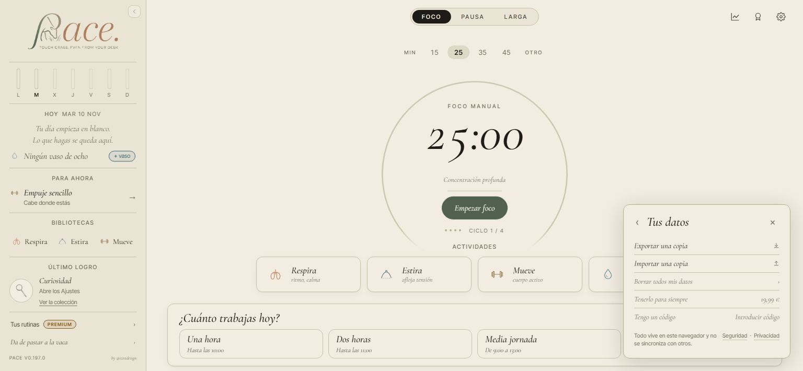
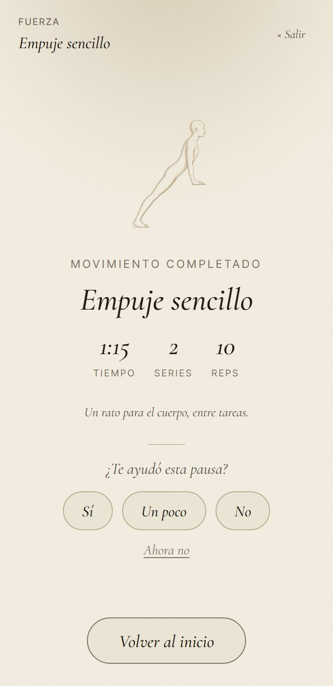
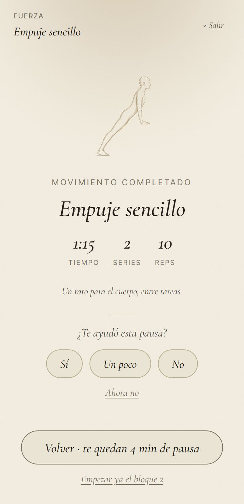
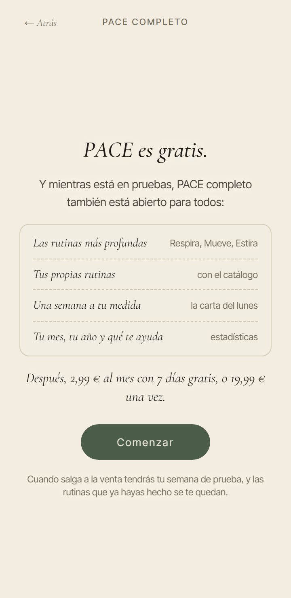
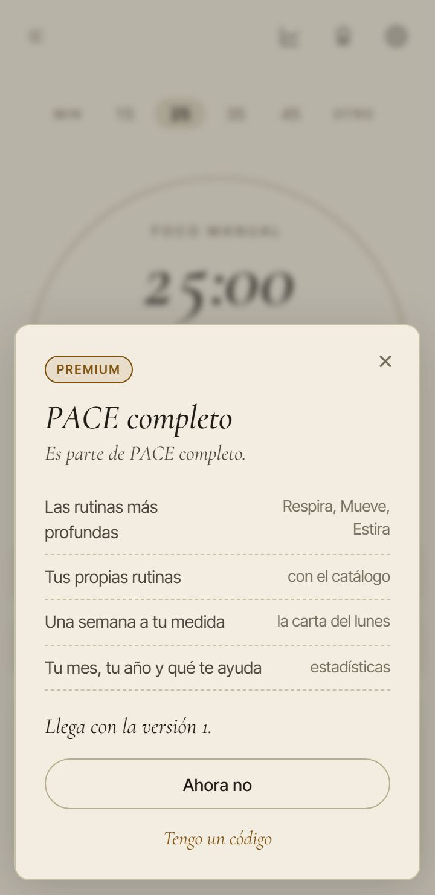
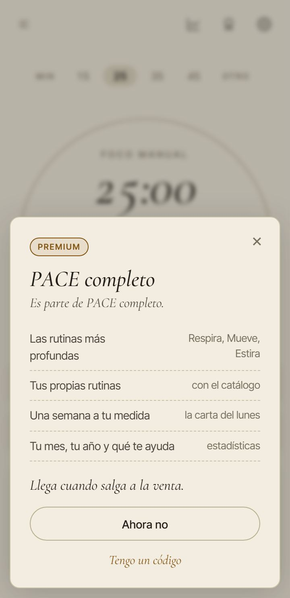

<title>Montado del 10 de noviembre</title>
<meta name="claude:viewport-fit-sides" content="cover">
<link rel="preconnect" href="https://fonts.googleapis.com">
<link rel="stylesheet" href="https://fonts.googleapis.com/css2?family=Cormorant+Garamond:ital,wght@0,500;1,500&family=Inter:wght@400;500&display=swap">
<style>
/* Una columna de lectura; cada letra, con su antes y después lado a lado. Paleta y letra de PACE (DESIGN_SYSTEM.md). */
:root {
  --bg: #F3ECE0; --panel: #EAE2D2; --tinta: #2A251E; --tinta-2: #5E5648; --linea: #CFC4AE;
  --oliva: #4F5E4A; --terracota: #A4593A;
  --serif: 'Cormorant Garamond', 'Iowan Old Style', Georgia, serif;
  --sans: 'Inter', system-ui, -apple-system, 'Segoe UI', sans-serif;
}
@media (prefers-color-scheme: dark) { :root:not([data-theme="light"]) {
  --bg: #1F1C17; --panel: #29251F; --tinta: #EFE7D8; --tinta-2: #B9AE9A; --linea: #463F34;
  --oliva: #A9B99C; --terracota: #E0936F; color-scheme: dark } }
:root[data-theme="dark"] {
  --bg: #1F1C17; --panel: #29251F; --tinta: #EFE7D8; --tinta-2: #B9AE9A; --linea: #463F34;
  --oliva: #A9B99C; --terracota: #E0936F; color-scheme: dark }
body { background: var(--bg); color: var(--tinta); font-family: var(--sans); font-size: 16px; line-height: 1.55; }
main { max-width: 760px; margin: 0 auto; padding-block: 40px 64px;
  padding-left: max(16px, env(safe-area-inset-left, 0px)); padding-right: max(16px, env(safe-area-inset-right, 0px));
  display: grid; gap: 48px; }
h1, h2 { font-family: var(--serif); font-style: italic; font-weight: 500; text-wrap: balance; margin: 0; }
h1 { font-size: 2.6rem; line-height: 1.1; }
h2 { font-size: 1.75rem; line-height: 1.2; }
p { margin: 0; max-width: 65ch; }
.rotulo { font-size: .75rem; letter-spacing: .12em; text-transform: uppercase; color: var(--tinta-2); }
header { display: grid; gap: 12px; }
section { display: grid; gap: 14px; border-top: 1px solid var(--linea); padding-top: 28px; }
.par { display: grid; grid-template-columns: repeat(auto-fit, minmax(200px, 1fr)); gap: 16px; }
.par.ancho { grid-template-columns: 1fr; }
figure { margin: 0; display: grid; gap: 6px; min-width: 0; }
figure img { width: 100%; height: auto; border: 1px solid var(--linea); border-radius: 6px; display: block; }
.par:not(.ancho) figure img { max-width: 260px; }
figcaption { font-size: .8rem; color: var(--tinta-2); }
figcaption b { color: var(--tinta); font-weight: 500; }
.sin-foto { background: var(--panel); border-radius: 8px; padding: 16px 18px; display: grid; gap: 8px; }
ul { margin: 0; padding-left: 1.2em; display: grid; gap: 8px; max-width: 65ch; }
.mirar { background: var(--panel); border-radius: 8px; padding: 22px; display: grid; gap: 14px; }
.mirar h2 { color: var(--oliva); }
.ojo { color: var(--terracota); font-weight: 500; }
</style>

<main>
  <header>
    <span class="rotulo">PACE · rama montar-auditoria-10nov</span>
    <h1>Lo montado de tus letras a la auditoría</h1>
    <p>Cinco cosas montadas, cada una con sus pruebas en verde. Aún no está en la app que usa la gente: espera tu «júntalo».
      La línea de los lunes (3A) no está: espera su maqueta de móvil.</p>
  </header>

  <section>
    <span class="rotulo">1A</span>
    <h2>Una fila para comprar en Ajustes</h2>
    <p>En «Tus datos» sale «Tenerlo para siempre · 19,99 €», encima de «Tengo un código».</p>
    <div class="par">
      <figure><figcaption><b>Antes</b> · móvil</figcaption></figure>
      <figure><figcaption><b>Después</b> · móvil</figcaption></figure>
    </div>
    <div class="par ancho">
      <figure><figcaption><b>Antes</b> · ordenador</figcaption></figure>
      <figure><figcaption><b>Después</b> · ordenador</figcaption></figure>
    </div>
  </section>

  <section>
    <span class="rotulo">2A</span>
    <h2>El cierre del ejercicio dice lo que sigue</h2>
    <p>Si el ejercicio venía de una pausa, el botón dice cuánta pausa te queda, y debajo puedes empezar ya el bloque siguiente.
      Sin pausa en marcha, sigue como antes: «Volver al inicio».</p>
    <div class="par">
      <figure><figcaption><b>Antes</b> · «Volver al inicio»</figcaption></figure>
      <figure><figcaption><b>Después</b> · lo que queda de pausa</figcaption></figure>
    </div>
  </section>

  <section>
    <span class="rotulo">4A</span>
    <h2>La bienvenida y la invitación, sin «v1»</h2>
    <p>Donde decía «v1» ahora dice «cuando salga a la venta» y «mientras está en pruebas». En inglés, igual.</p>
    <div class="par">
      <figure><figcaption><b>Antes</b> · bienvenida</figcaption></figure>
      <figure><figcaption><b>Después</b> · bienvenida</figcaption></figure>
      <figure><figcaption><b>Antes</b> · invitación</figcaption></figure>
      <figure><figcaption><b>Después</b> · invitación</figcaption></figure>
    </div>
  </section>

  <section>
    <span class="rotulo">D-5 B · no se ve</span>
    <h2>El día de la venta se quedan las rutinas que acabaste</h2>
    <div class="sin-foto">
      <p>Quien ya usaba PACE conserva para siempre las rutinas de pago que <b>acabó</b> alguna vez. Antes bastaba con empezar
        una y salir a los 30 segundos para quedársela.</p>
      <p>Lo comprueba una prueba nueva. La rompí a propósito volviendo a lo de antes, y salió en rojo: la prueba lo pilla.</p>
    </div>
  </section>

  <section>
    <span class="rotulo">D-4 C · no se ve</span>
    <h2>El repo público ya no dice dónde guardas las llaves</h2>
    <div class="sin-foto">
      <p>Los documentos ya no dicen dónde guardas las llaves (el disco, las carpetas) ni cuenta el detalle del fallo del cobro
        mensual que está pendiente de arreglar. Queda dicho que existe y que hay que arreglarlo antes del cobro mensual.</p>
      <p class="ojo">Lo que ya se subió antes sigue en el historial de git: quien mire versiones viejas del repo lo puede encontrar.
        Tampoco se puede ocultar la rama del arreglo del cobro, que ya está subida y es pública.</p>
      <p>No he borrado el historial porque eso rompe las ramas y sesiones que están en marcha. Si quieres borrarlo, se puede hacer
        aparte, con calma.</p>
    </div>
  </section>

  <section class="mirar">
    <h2>Antes de decir «júntalo», mira esto</h2>
    <ul>
      <li>En el ordenador, con la fila nueva, «Tus datos» se pliega un poco antes en ventanas bajas (34 px antes). Si no se
        plegara, el panel pediría scroll.</li>
      <li>La página /premium de la web sigue diciendo «Llega con la versión 1». No entraba en esta letra.</li>
      <li>La bienvenida dice «las rutinas que ya hayas hecho se te quedan». Con D-5 B, eso quiere decir «acabado». Si prefieres
        que lo diga así, se cambia.</li>
      <li>En el cierre del ejercicio, la tecla Enter sigue volviendo al inicio.</li>
    </ul>
  </section>
</main>
